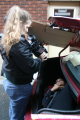
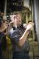

Josh is a graduate of the Vancouver Film School’s foundation film program. A script written while at VFS, Four Friends, went on to be published in the book The Tyranny of Story.
Since graduating from Algonquin College's School of Television Broadcasting and Interactive Multimedia Program, Amber has accumulated 10 years of experience in both television and film productions.
Silvia’s first encounter with the world of TV and film was work-related: she helped colleagues create a DVD for radiation safety training. She then met STT Director of Photography, Amber Peters, at an open casting call for a locally-produced project, and was cast as a farmer’s wife.
Jeremy is an award-winning Director of Photography and Editor from the Ottawa area. He has worked in the business for the past ten years with an ever-expanding resume.
As an actor/director, Brett has completed a staggering 18 feature films (including The Bonesetter, My Dead Girlfriend, and Iron Soldier), with more projects on the way.

 Updates via RSS
Updates via RSS